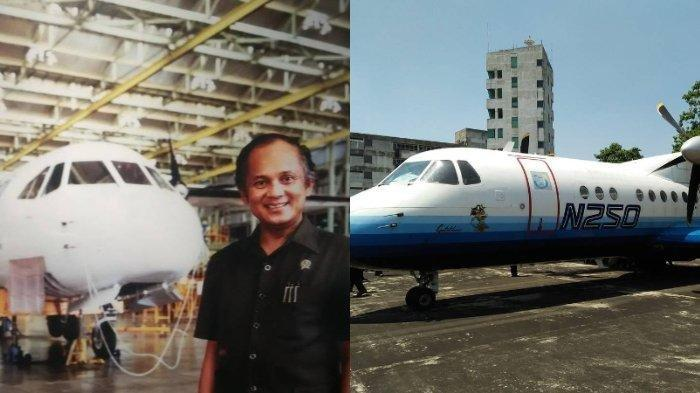
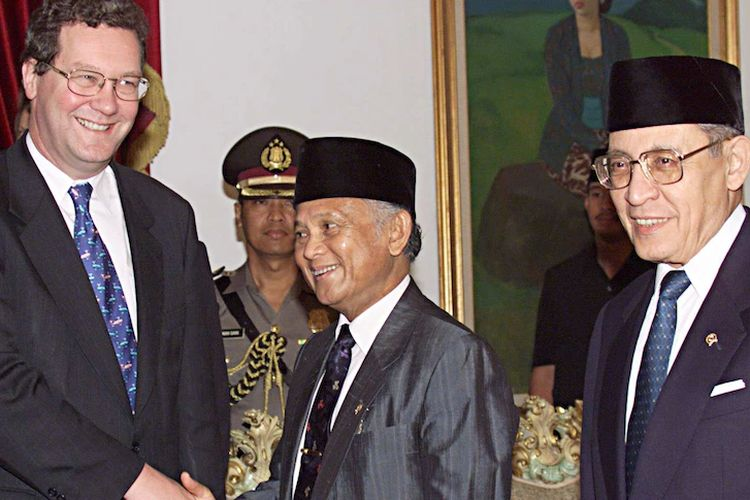
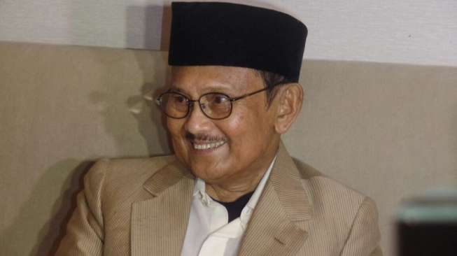
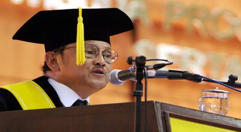

October 17, 2024
B.J. Habibie, a national genius figure known as a scientist, technocrat and the 3rd President of Indonesia. Born in Parepare, South Sulawesi, on June 25 1936, Habibie spent most of his youth studying in Germany, where he made extraordinary achievements in the field of aviation technology. After decades of a career abroad, he returned to Indonesia at President Soeharto's call to develop an industrial strategy, including IPTN.
Apart from being an innovator, Habibie is also known as a leader who brought Indonesia into an era of reform with various fundamental changes in the fields of democracy and government. His legacy is not only visible from his technological works, but also from his inspiration and boundless love for the nation and state..

B.J. Habibie showed his tenacity in the world of aviation by designing the first aircraft made in Indonesia, the N-250 Gatotkaca, in 1995. This aircraft became a symbol of the nation's technological progress. Habibie's efforts in the aerospace industry continue today through PT Dirgantara Indonesia, IPTN's successor, which focuses on the production and development of aircraft and aviation technology.

B.J. Habibie felt proud when his aircraft, the N-250 Gatotkaca, was purchased by the United States Aeronautics and Space Administration (NASA). This achievement not only shows the quality of the innovation produced, but also increases Habibie's reputation in the eyes of the global aerospace industry. This success earned him the attention of MBB, one of the largest aircraft manufacturers in Hamburg, which further emphasized Habibie's important contribution to the world of aviation.

Apart from his achievements in the world of aviation, B.J. Habibie also served as Minister of Research and Technology. His political career continued to climb until he became Vice President. In 1998, Habibie was appointed as the 3rd President of Indonesia, replacing Suharto, and led the country in a transition period towards an era of reform.

B.J. Habibie studied at the Bandung Institute of Technology (ITB) before receiving a scholarship to continue his studies in Aachen, West Germany. In 1960, he earned a diploma with cum laude honors, demonstrating his brilliance in the academic field and paving the way for a brilliant career in the world of technology and aerospace.

In 1965, B.J. Habibie succeeded in obtaining a doctorate in Germany with the title summa cum laude, an extraordinary achievement that only a few people are able to achieve. This achievement further confirmed his genius and became the foundation for his great contributions to science and technology, especially in the field of aerospace.
B.J.'s greatness Habibie was recognized internationally through various prestigious awards, including the Edward Warner Award and the von Karman Award, both of which are equivalent to the Nobel Prize. This achievement confirms his extraordinary contribution in science and technology, especially in the field of aerospace, and makes Indonesia even more famous in the eyes of the world.